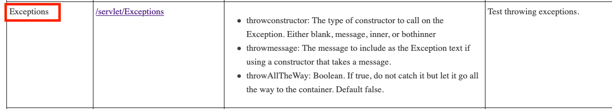
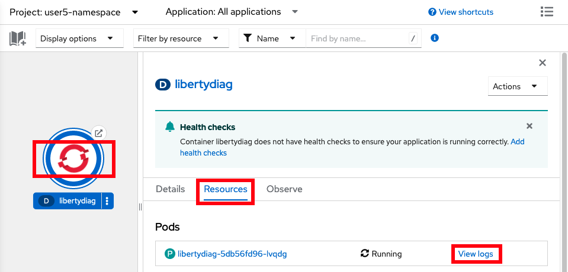

Lab: Application Errors or Warnings
This lab covers how to investigate application errors or warnings in Liberty applications in OpenShift.
Lab
This lab will take approximately 5 minutes.
Step 1: Install example application
If you haven't already, install the sample application. If you installed it in a previous lab, you may continue using the previous installation.
Step 2: Exercise error servlet
Now you will use the libertydiag application to simulate errors.
Using the command line
-
Request the following web page from your terminal to simulate errors:
-
macOS, Linux, or Windows with Cygwin:
curl -k -s "https://$(oc get route libertydiag "--output=jsonpath={.spec.host}")/servlet/Exceptions" -
Windows with Command Prompt:
- Ensure you have
curlfor Windows installed -
List the application's URL:
oc get route libertydiag "--output=jsonpath={.spec.host}{'\n'}" -
Execute the following command, replacing
$HOSTwith the output of the previous command:curl -k -s "https://$HOST/servlet/Exceptions"
- Ensure you have
-
-
You should see an exception stack trace. If not, rerun the
curlcommand with the-voption to investigate. -
Request the following web page from your terminal with additional parameters:
-
macOS, Linux, or Windows with Cygwin:
curl -k -s "https://$(oc get route libertydiag "--output=jsonpath={.spec.host}")/servlet/Exceptions?throwAllTheWay=true&throwmessage=errorEncountered&throwconstructor=message" -
Windows with Command Prompt:
- Ensure you have
curlfor Windows installed -
List the application's URL:
oc get route libertydiag "--output=jsonpath={.spec.host}{'\n'}" -
Execute the following command, replacing
$HOSTwith the output of the previous command:curl -k -s "https://$HOST/servlet/Exceptions?throwAllTheWay=true&throwmessage=errorEncountered&throwconstructor=message"
- Ensure you have
-
Using the browser
- Click on the
Exceptionslink from the libertydiag application homepage:
 -
You should see an exception stack trace in the browser. Now add the query parameters
throwAllTheWay=true&throwmessage=errorEncounteredto the end of the URL and pressENTER:[...]/servlet/Exceptions?throwAllTheWay=true&throwmessage=errorEncountered&throwconstructor=message -
You should see a different error page with an Error 500. Reload the page a couple of times.
Step 3: Review log data
Now you will review the logs to understand how to investigate exceptions.
Using the command line
-
List the pods for the example application deployment; for example:
oc get podsExample output:
NAME READY STATUS RESTARTS AGE libertydiag-b98748954-mgj64 1/1 Running 0 97s -
Print the native logs of the pod by replacing
$PODwith the pod name from the previous command. The native logs are equivalent to the Libertyconsole.login a non-cloud deployment.oc logs $PODFor example:
oc logs libertydiag-b98748954-mgj64 -
The native logs are a bit hard to review since they're in JSON, so next we'll review the
messages.log. -
Open a shell into the pod by replacing
$PODwith a pod name from the previous command:oc rsh -t $PODFor example:
oc rsh -t libertydiag-b98748954-mgj64 -
Copy and paste the following command and press
Enterto print the full Libertymessages.log:cat /logs/messages.log -
You should see an application exception in the logs such as:
[1/11/23 20:01:10:780 UTC] 00000028 com.ibm.ws.webcontainer.util.ApplicationErrorUtils E SRVE0777E: Exception thrown by application class 'com.example.servlet.Exceptions.doWork:50' com.example.util.SkipCatchException: errorEncountered at com.example.servlet.Exceptions.doWork(Exceptions.java:50) at com.example.util.BaseServlet.service(BaseServlet.java:104) [...]
Using the browser
- In the
Topologyview of theDeveloperperspective, click on thelibertydiagcircle, then click theResourcestab in the drawer on the right, and then click onView logsfor the one pod that's running. TheView logsoutput is equivalent to the Libertyconsole.login a non-cloud deployment.
 - Click on the
Terminaltab to open a remote shell into the running container in the pod:

-
Copy and paste the following command and press
Enterto print the full Libertymessages.log:cat /logs/messages.log -
You should see an application exception in the logs such as:
[1/11/23 20:01:10:780 UTC] 00000028 com.ibm.ws.webcontainer.util.ApplicationErrorUtils E SRVE0777E: Exception thrown by application class 'com.example.servlet.Exceptions.doWork:50' com.example.util.SkipCatchException: errorEncountered at com.example.servlet.Exceptions.doWork(Exceptions.java:50) at com.example.util.BaseServlet.service(BaseServlet.java:104) [...]
Step 4: Download Liberty logs
In many cases, you may want the full logs for review on your workstation.
Using the command line
-
List the pods for the example application deployment; for example:
oc get podsExample output:
NAME READY STATUS RESTARTS AGE libertydiag-ddf5f95b6-wj6dm 1/1 Running 0 97s -
Download the Liberty
messages.logby replacing$PODwith a pod name from the previous commandoc cp $POD:/logs/messages.log messages.logFor example:
oc cp libertydiag-ddf5f95b6-wj6dm:/logs/messages.log messages.log
Using the browser
Files other than native logs (equivalent to Liberty's console.log) cannot be downloaded through the browser. You must use the command line steps above. Alternatively, you may use the Terminal tab of the pod and cat the file in the browser.
Summary
In summary, this lab demonstrated how to view Liberty logs in an OpenShift environment to investigate exceptions.